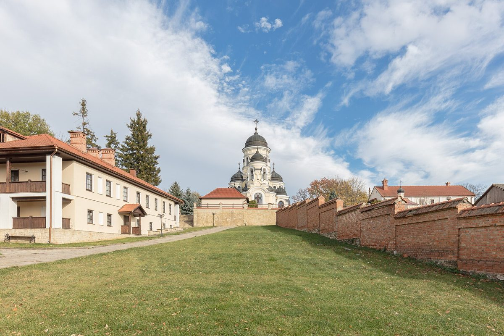
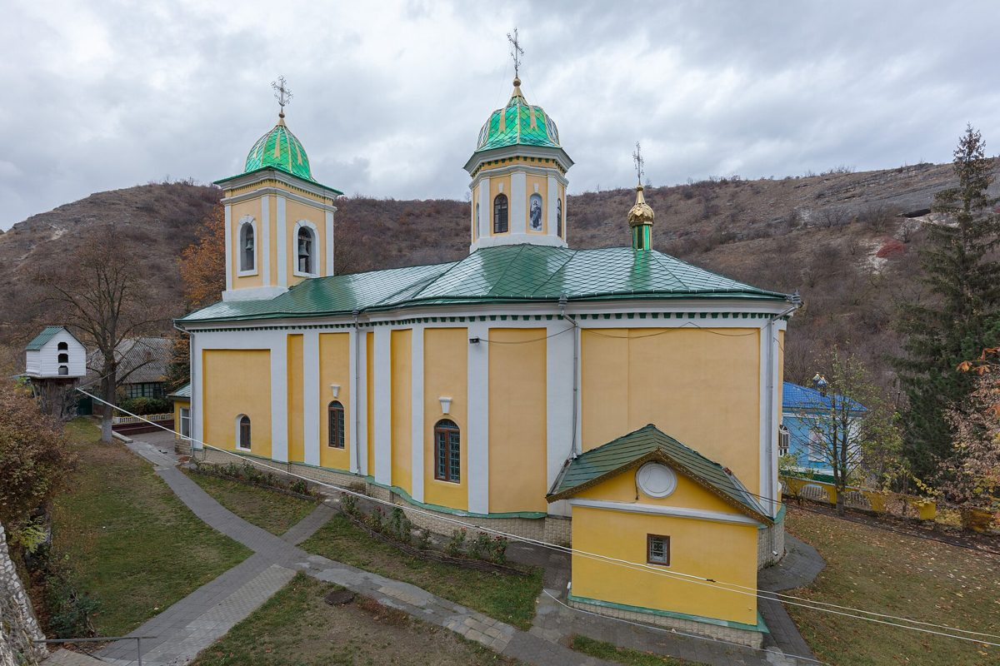

Despre proiect
Obiective turistice, distanțe și o scurtă prezentare video.
Scopul site-ului
Acest mini-site a fost creat pentru a prezenta câteva dintre cele mai interesante locuri din Republica Moldova. Informația este adresată tinerilor și celor care vor să facă o excursie de o zi sau de un weekend.
Toate obiectivele din tabelul de mai jos pot fi vizitate pornind din Chișinău. Distanțele sunt aproximative și sunt calculate pe drum.
Obiective turistice
| Nr. | Obiectiv | Localitate | Tip | Distanța de la Chișinău |
|---|---|---|---|---|
| 1 | Arcul de Triumf | Chișinău | Monument | 0 km |
| 2 | Beciurile Cricova | Cricova | Vinărie | 15 km |
| 3 | Mănăstirea Căpriana | Căpriana, r. Strășeni | Mănăstire | 40 km |
| 4 | Orheiul Vechi | Butuceni, r. Orhei | Complex muzeal | 60 km |
| 5 | Mănăstirea Saharna | Saharna, r. Rezina | Mănăstire | 110 km |
| 6 | Cetatea Soroca | Soroca | Cetate medievală | 160 km |
Galerie foto



Prezentare video
Un scurt video cu imagini din locurile prezentate pe site.
Surse
- Imaginile folosite sunt de pe Wikimedia Commons (licențe libere).
- Informații despre obiective: Wikipedia.
Înapoi la pagina principală sau mergi la pagina de contact.